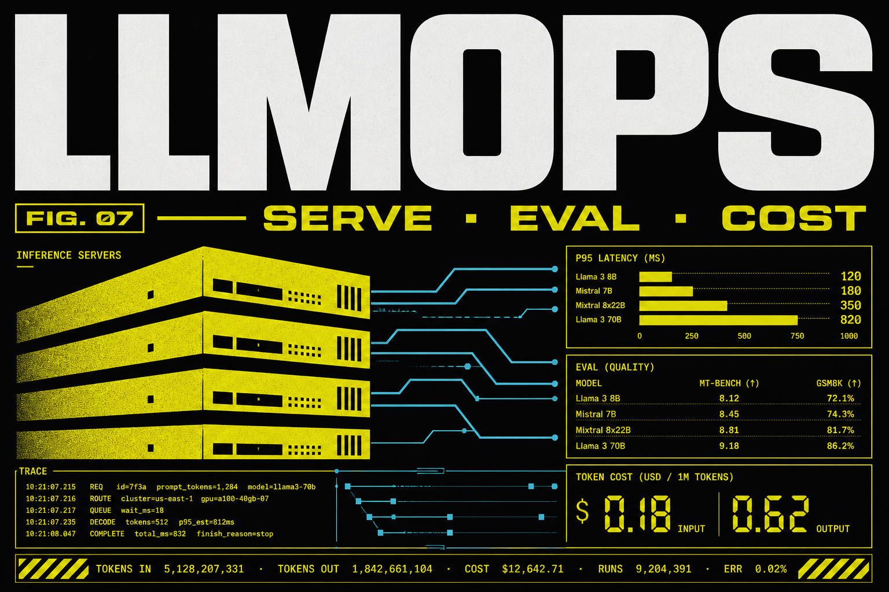

LLMOps
Three months live for engineers who already ship services and now need LLM production habits: serving (vLLM-class), golden-set eval gates, prompt and adapter versioning, traces (LangSmith/Langfuse), guardrails, and token budgets. Not MLOps-for-tabular and not Power BI.

Program fee
One-time payment
What you learn
Who it is for
Career support
Course Curriculum
Module 1: Inference
Serving LLMs
LLMOps starts at the server. You will talk about batching, caching, and p95 as if they were SLOs — because they are.
LLM serving and scaling
- vLLM-class ideas: paging, batching, continuous batching
- Self-host vs API: when each is honest
- Context length vs throughput
Batching and caching
- Prefix cache, prompt cache, semantic cache with a danger label
- What not to cache (personalized, secret, stale policy)
- Queueing: user-visible wait vs 500s
p95/p99 latency
- Measure tokens/sec and time-to-first-token separately
- Streaming as a latency lie if the last token is late
- Load test with a realistic mix, not one prompt
Capacity
- A back-of-envelope: QPS × tokens × cost
- Shed load before you melt the GPU
- Not Power BI — this is inference math
You leave with a serving note: architecture choice, a latency SLO, and a load-test screenshot or table.
Module 2: Observability
Serving LLMs
If you cannot see traces, you cannot debug a prompt. Dashboards here are Langfuse/Grafana-class, not analyst BI.
Traces and dashboards
- Trace every call: prompt version, model, tokens, latency, user/tenant
- Redact secrets in traces
- A board: error rate, cost, p95
Error budgets
- What is an ‘LLM error’ — timeout, empty, unsafe, ungrounded
- Budget per week, not vibes
- Page a human only when the budget burns
Cost optimization
- Cost per successful task, not per token vanity
- Route easy traffic to a small model
- A weekly review that actually happens
On-call habits
- A runbook: provider outage, cost spike, quality drop
- Feature flags for prompts
- This is not tabular MLOps
You leave with a trace pipeline and a three-panel ops board: latency, cost, quality proxy.
Module 3: RAG in production
RAGOps
RAG in prod is an eval problem. You will gate retrieval quality the way MLOps gates accuracy.
Retrieval evaluation
- Hit rate, MRR, groundedness on a frozen set
- Slice by doc type (PDF vs wiki vs ticket)
- Index build as a versioned artifact
Golden-set regression
- CI job that fails if groundedness drops
- Canary a chunker change
- Do not eval only on the founder’s favourite PDF
Chunk hit-rate
- Log retrieved ids; debug misses
- Hybrid search when names and SKUs fail embed
- Access control regressions
Incidents
- Stale index after a doc purge
- Duplicate chunks flooding context
- A rollback of the index, not the whole app
You leave with a RAG eval harness in CI and a golden set you refuse to eyeball-only.
Module 4: Prompt operations
RAGOps
Prompts are code. You will version them, canary them, and block merges that fail eval.
Prompt versioning and governance
- Prompt + model + tools as a tuple
- Who can edit production prompts
- Diffs in git, not in a Slack thread
Canary rollouts
- 1% traffic, watch traces, then 100%
- Kill switch
- User-visible A/B only if you can score it
Eval gates
- Offline set + online proxy (thumbs, task success)
- Safety tests in the same gate
- A failed gate is a red build
Adapters
- If you ship LoRA, version it like a prompt
- Do not mix adapter v3 with prompt v1 silently
You leave with prompts in git, a canary path, and a CI gate that has failed at least once on purpose.
Module 5: Agent operations
AgentOps
Agents in production need audits. You will log tool calls, cap steps, and put safety filters where money and PII live.
AgentOps
- Step cap, time cap, cost cap
- Idempotent tools
- Human approval on irreversible actions
Tool-call auditing
- Every call: args, result hash, user
- Replay a bad session
- Allowlist changes go through review
Safety filters
- Input and output filters
- Jailbreak evals on a fixed set
- What you still cannot promise: a perfect model
Career-call close
- This cohort is 3 months — it does not replace platform years
- Placement support, certificate, internships as published
- If you need training pipelines, that is MLOps
You leave with an agent policy, an audit log sample, and a safety eval you ran before ‘demo day’.
Frequently asked questions
What is the fee and duration?
₹35,000, one-time, 3 months live.
Do you teach Power BI?
No. Observability is Langfuse/Grafana. Power BI is only on Data Analytics with AI.
Do I need MLOps first?
Helpful if you already ship services. Take MLOps if your job is tabular/training pipelines; take this if your job is LLM APIs.
Ready to start?
Talk to Prerna about this program — 15 minutes, no sales pitch.